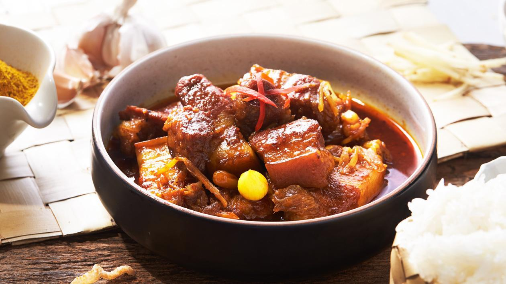

Gaeng Hung Lay
Gaeng Hung Lay is one of the most iconic dishes of Northern Thailand, Pork belly and pork ribs are slowly stewed in a WHOLE bunch of herbs and spices. The result is tender fatty pieces of pork that has been entirely permeated by the rich and aromatic sauce.
Ingredients
Hung Lay Curry Paste
- 8-10 g dried mild red chilies, plus some spicier ones to taste (see note)
- 5 cloves garlic
- 1 cup chopped shallots
- 1 stalk lemongrass, bottom half only, chopped
- slices galangal
- 2 Tbsp hung lay curry powder (recipe below, or use garam masala)
- 1 tsp fermented shrimp paste
- 2-inch pc turmeric (or 1 ? tsp powdered turmeric)
The Curry
- 1 lb pork belly, cut into big chunks
- 1 lb pork spare rib tips, chopped
- 1-2 cup tamarind juice
- 2 Tbsp dark brown sugar or palm sugar
- 1-2 tsp black soy sauce or dark soy sauce
- 1 – 2 Tbsp fish sauce
- 1-2 cup julienned ginger
- 1 head garlic (peeled, but keep cloves whole)
- 1 cup pearl onions or Thai small shallots
Hung Lay Curry Powder
- 8-inch cinnamon sticks
- 2 tsp black peppercorns
- 2 tsp turmeric powder
- 1 tsp ground cardamom
- 2 Tbsp cumin seeds
- 2 Tbsp coriander seeds
- 1 star anise
- 2 tsp fennel
- 5 pc white cardamom
- 1 tsp ground cloves or 3 pc whole cloved
- 1 tsp nutmeg
Recipe Instructions
Make Hunglay Curry Powder
- For whole spices, toast them in a dry saute pan until aromatic and darkened slightly. You can combine spices of similar size and toast them at the same time. Then combine all spices in a coffee grinder or blender and grind into a powder. Once made, store in an air tight container in a cool, dark place. You will have more than you need for this recipe, so feel free to use it as rubs, marinades, or on vegetables!
Make the curry paste
- If using a blender: Grind dried chilies separately in a coffee/spice grinder, removing the seeds if you want to reduce the heat. In the blender jug, combine lemongrass, galangal, turmeric, shallots, garlic and shrimp paste, and blend into a paste. Add the dried chilies and the hung lay curry powder and blend until well combined.
Make the curry
- Preheat a wok or large pot over medium heat, do not add any oil as there will be a lot of pork fat rendered. Add the pork belly pieces in one layer, and without crowding the pan, and let them sear until well browned on 4 sides. They will stick at first but once they are browned they will release from the pan.
- Add the pork ribs and give it a quick toss. Then add the curry paste and toss to coat all pieces of pork well. Once the paste is well distributed and it has had a couple of minutes to fry in the pork fat, add water just until it barely covers the pork. Add fish sauce, black soy sauce, tamarind and sugar, and cook for 1 hour 45 mins to 2 hours, loosely covered, until the pork is fork tender. Towards the last 20 minutes, check the amount of liquid, and if it’s very soupy, uncover the pot completely to allow liquid to evaporate. You want the sauce to be thick and rich in the end.
- Once pork is tender add julienned ginger, whole garlic and pearl onions and simmer for another 15-20 minutes until the garlic is tender.
- Taste and adjust seasoning.
- Garnish with extra fresh julienned ginger if desired and serve with rice.

All Rights Reserved